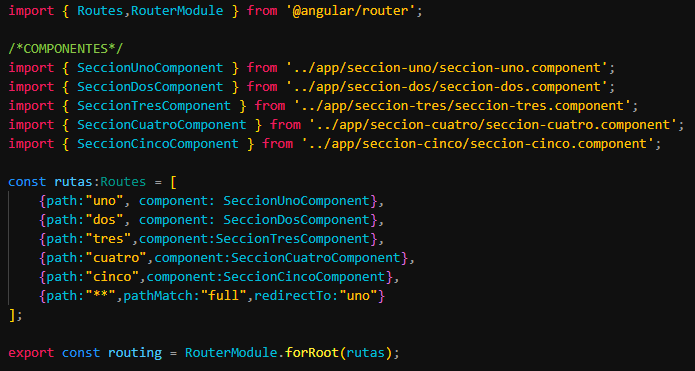

La navegacion de una aplicacion o pagina web es muy importante para que el usuario puede acceder a las distintas secciones que posee nuestro sitio web. Angular provee un potente sistema de routing para establecer la
navegacion por el sitio web.
Las rutas en angular son un arreglo de objetos Routes, a continuacion se muestra como se especifican las rutas:

En la imagen se puede observar el arreglo de rutas llamado rutas de tipo Routes de la biblioteca @angular/router, cada ruta creada tiene las siguientes propiedades:
-
patch: Estable el nombre de la ruta, esta se vera reflejada en la URL del navegador.
-
component: Especifica el componente que sera llamado cuando se solicite un patch especifico.
-
patch='**': Es una ruta especial que se llama cuando el usuario trata de acceder a una ruta que no esta definida en el sistema de rutas, se acompaña de la propiedad redirectTo para indicar la ruta por defecto a la que se debe
acceder.
Una vez creado el sistema de rutas se debe decir a Angular que se usara dicho sistema de rutas, esto debe hacerce importando las rutas en el AppModule de la aplicacion. Notar que en la imagen se exporta la ruta como
principal usando el metodo forRoot del objeto RouterModule.
En el app.module se debera colocar el sistema de rutas en la seccion imports[].
Una vez establecido el sistema de rutas, importado al modulo principal, puede hacerse uso de routerLink para acceder a ese componente. ¿Donde usar routerLink? Puede usarse en cualquier elemento HTML, pero es mas
comun realizar la navegacion haciendo uso de enlaces y/o botones de accion.
A continuacion se usa el sistema de rutas con enlaces:
Notar el uso del caracter / para acceder a la ruta, puede obviarse este caracter, pero es recomendable usarlo.
Una vez establecida la navegacion, en el navegador puede observar la forma en que se crea la ruta:
Si usted intenta navegar entre sus componentes usando el sistema de rutas creado, no podra ver su contenido debido a que falta un paso importante. Cuando se trabaja con sistema de rutas es necesario que en el
app.component.html colocar la etiqueta router-outlet, tal como se muestra a continuacion:
Ahora que nuestro sistema de rutas funciona de forma correcta, es comun observar en muchos sitios web que al visitar cierta pagina de un sitio web se agregue un estilo al enlace que hace referencia a esta pagina. En nuestro caso, cuando el usuario haga
clic en el enlace de una pagina de nuestro sitio haremos que dicho enlace quede con estilo CSS que indique que esta activo o que el usuario se encuentra en dicha pagina. Para esto angular provee un atributo de etiqueta llamado routerLinkActive el cual recibe como valor la clase de estilos que sera aplicada a dicho elemento, esta clase debe estar definida en el archivo CSS donde se encuentre el componente de navegacion.
El uso de routerLinkActive es de la misma forma que routerLink, pero especificando como valor el nombre de la clase CSS que sera aplicada a cada elemento de navegacion:
La clase active se define como sigue:
Finalmente el efecto es el siguiente:
El sistema de rutas de Angular nos permite enviar informacion adicional usando las rutas creadas. Imagine que tiene una pagina donde muestra una lista de productos y otra pagina que muestra dicho producto en detalle y se desea que cuando el usuario haga
clic sobre algun producto de la lista se muestre su detalle, una forma de solventar esto es creando una pagina de detalle para cada producto en la lista, pero existe el inconveniente de agregacion de nuevos productos y esto conllevaria a la creacion
de una nueva pagina de detalle para cada nuevo producto añadido a la lista.
Angular nos permite hacer mas eficiente dicha tarea, con angular podremos pasarle como parametro el id del producto a la pagina de detalle y que esta pagina realice la consulta en detalle de dicho producto y renderize en su plantilla la informacion
necesaria. Con esto nos evitamos crear una pagina para cada producto en la lista, ya que la plantilla de la pagina producto detalle tomaria el id para mostrar la informacion del producto.
Para indicarle a angular que una ruta en particular recibira un parametro basta indicarlo de la siguiente forma:
En la imagen la ruta con parametros es la segunda ruta mostrada, notar que para indicar que una ruta recibira un parametro debe indicardo con /:nombre_parametro. Para este ejemplo usaremos un componentes que muestre
un conjunto de nombres, cuando se haga clic sobre alguno de los nombres se procedera a mostrar una pagina con el detalle de la persona seleccionada. La pagina con el listado sera muy sencilla y se muestra a continuacion (incluso se puede ver ya
la ruta creada personas):
Una vez creados el componente del listado de personas y el componente del detalle de cada persona y adicional las rutas de cada una con parametro, indicaremos mediante routerLink que al hacer clic se redirija a la respectiva
pagina de detalle de la persona seleccionada, es aqui donde enviaremos el id de la persona que el usuario selecciono, tal como se muestra a continuacion en la plantilla de listado de personas:
Notar la forma en que se ha usado routerLink, es recomendable usarlo de esta forma cuando se requiere enviar parametros en las rutas. Tambien notar que el parametro enviado es tomado de una variable llamada persona definida en el controlador del componente y que es llamada desde un servicio estatico local al proyecto que es donde se ha creado un array de objetos con la informacion de cada persona.
Una vez hecho esta parte, si damos clic en alguna persona, la URL en el navegador se mostrara como sigue:
Notar como al dar clic sobre una de las personas listadas se envia el id de la persona en la URL a la pagina detalle persona. Ahora ¿Como tomamos ese ID en el componente detalle persona?, para dicha operación se debera usar el objeto
ActivatedRoute que devuelve un observable en el cual deberemos subscribirnos para acceder a los datos. A continuacion se muestra el codigo:
Se puede observar en el metodo ngOnInit() el uso del observable y como accedemos a los datos y como esta es pasada al servicio para consultar la informacion de la persona por ID.
Una vez hecho esto, en la plantilla html del detalle de la persona podemos acceder y mostrar la informacion de la persona:
Finalmente el resultado es el siguiente:
Si desea validar la funcionalidad de este ejemplo, en este mismo sitio se encuentra un link para navegar a dicha seccion, sino puede hacer click a continuacion Ir Personas.
Esto es todo por esta seccion, espero que esta explicación básica halla sido de ayuda.